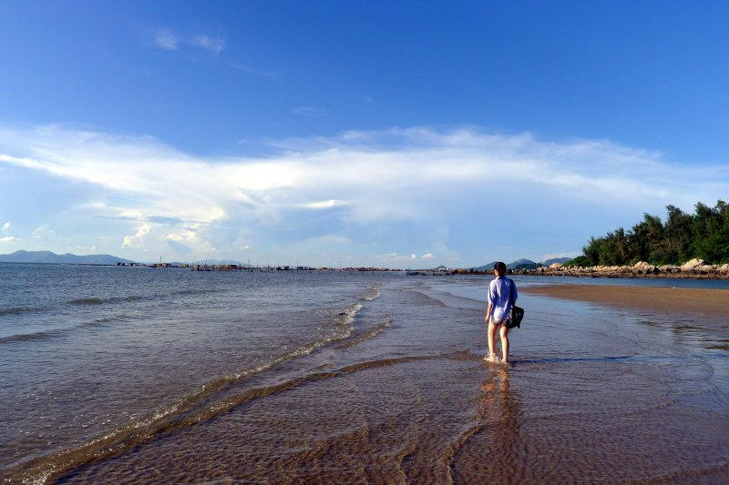
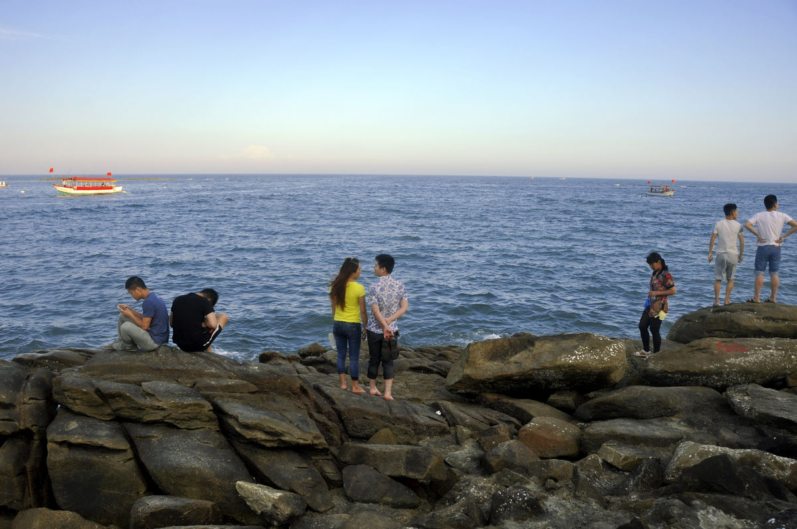

|  | |
| 一望无际的大海， 奔腾的浪花，时而如一头凶猛的狮子，一片汪洋，使人感觉像是走进了无边无际 的沙漠。 | 海水美，沙滩美，蓝天更美！那碧空万里的天空上，飘着几朵洁白的云儿，躺在沙滩上仰望蓝天，一阵风儿吹过，是那么惬意，那么洒脱，那么令人心旷神怡。 |
|  | |
| 听听大海的声音， 期望有一天，能够和挚爱的亲人一齐坐在贝壳房的阳台，欣赏海上的明月。欢谈从小到大的点点滴滴，让我们享受一个快乐的夜晚。 | 沙滩可真是软啊，走上去，软绵绵地，远远望去，如一张金色的地毯上镶着无数颗耀眼的宝石；沙滩可真净啊，遍地都是细细地沙子和五彩缤纷的贝壳，没有任何杂物。 |